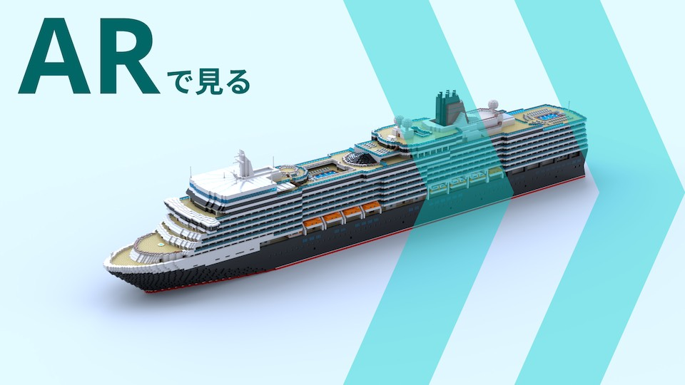

MS Queen Elizabeth
豪華客船 クイーンエリザベス号
言わずと知れた豪華客船
全長は294m。2000人を超える人を招き入れ、3階建てのシアター、プールにフィットネスジム、食事もショッピングも楽しめるこの船は、いわば海に浮かぶ一つの街。
全長3m、35,000 ピース。
- スケール
- 1/100
- 全長
- 297.6 cm
- 全幅
- 32.0 cm
- 全高
- 63.4 cm
- 設計
- 250時間
- 組立
- 50時間
実物大でどうぞ。

組立の様子はこちらから。
あしあと。
-
2018
- 5月テーマの検討開始
- 9月テーマが ”MS Queen Elizabeth” に決定
- 9月設計開始
-
2019
- 1月設計完了
- 4月完成
- 5月お披露目
- 5月第73回文化祭 “SAIL AWAY”
- 6月Japan Brickfest 2019
- 6月サンテレビニュース 出演
- 7月NHK 「Live Love ひょうご」 出演
- 10月産経新聞 掲載
- 10月船場まつり
- 11月神戸レゴオフ
-
2020
- 5月AR公開 (2020年度特設ページ)
- 7月灘校オンライン文化祭 ”vivid”
- 8月近鉄百貨店 奈良店 展示会
-
2021
- 1月ホテル ナビオス横浜 展示 (〜2月末)
- 5月2021年度特設ページ (当ホームページ)
- 6月第75回灘校文化祭 ”Knock&Dive”
-
2022
- 5月第76回灘校文化祭 ”Turn it Over”
順路はこちらです。
 展示室 2 八坂神社
エントランスへ戻る
展示室 2 八坂神社
エントランスへ戻る